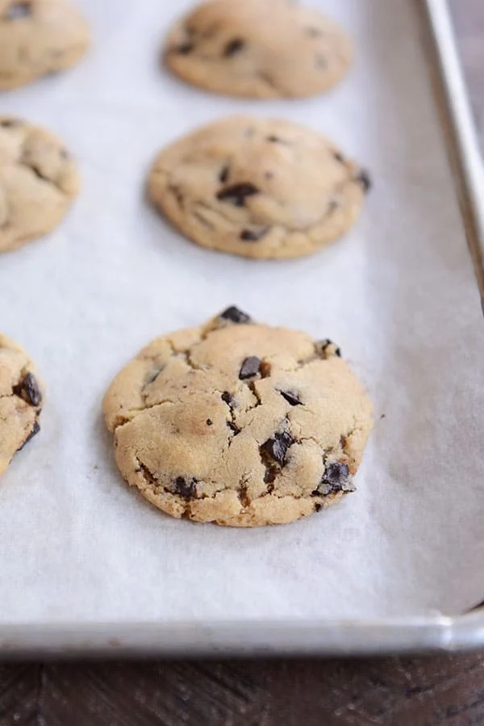

Chocolate Chip Cookies

Description
Unlike many cookie recipes we have tried, these delicious chocolate chip cookies stay soft for days after baking. The difference with these cookies is the order in which the ingredients are mixed and the amount of time they are mixed. By adding the baking soda, baking powder, and vanilla to the butter and sugars, we minimize the extra mixing that has to happen after air has already been incorporated into the butter. Beating the butter for longer allows us to add more air into the dough, thereby making a softer cookie.
Ingredients
- 1 cup (227 g) salted butter, softened
- 1 cup (212 g) granulated sugar
- 1 cup (212 g) brown sugar
- 2 teaspoons vanilla extract
- 3/4 teaspoon salt
- 1 teaspoon baking soda
- 1/2 teaspoon baking powder
- 1 large egg
- 2 1/2 cups (355 g) all-purpose flour
- 2 cups (340 g) semisweet chocolate chips
Instructions
- Preheat the oven to 350 degrees F. Line two baking sheets with parchment paper.
- Using an electric mixer, combine the butter, granulated sugar, brown sugar, vanilla, salt, baking soda, and baking powder.
- Mix on low speed to combine. Increase the speed to medium and mix for 4-5 minutes until the mixture is light and creamy.
- Add the egg and mix until evenly combined.
- Add the flour and chocolate chips and mix until combined and no dry streaks remain.
- Scoop the cookie dough into rounded balls, spacing them an inch or so apart on the prepared baking sheets.
- Bake for 9-11 minutes until just very lightly golden. Let cool for a few minutes on the baking sheet before moving to a wire rack to cool completely.